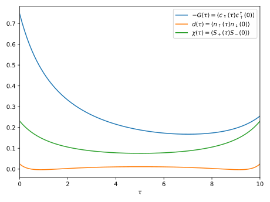

Example

The following example demonstrates solution of the single orbital Anderson model in thermodynamic equilibrium coupled to a fermionic bath with a semi-elliptic density of states. We compute the single-particle Green's function, the dynamical double-occupancy and the transversal magnetic susceptibility of the impurity. The resulting curves are shown above.
# For GF containers and DOS objects
using Keldysh; kd = Keldysh
# For exact diagonalization of the atomic problem
using KeldyshED; ked = KeldyshED; op = KeldyshED.Operators
using QInchworm.utility: ph_conj
using QInchworm.expansion: Expansion, InteractionPair, add_corr_operators!
using QInchworm.inchworm: inchworm!, correlator_2p
using QInchworm.ppgf: partition_function, normalize!, density_matrix
using PyPlot
#
# Parameters of the model
#
ϵ = 0.1 # Position of the atomic level
U = 1.0 # Coulomb repulsion constant
D = 2.0 # Half-bandwidth of the bath DOS
V = 0.5 # Coupling strength between the atom and the bath
β = 10.0 # Inverse temperature
# Imaginary time segment τ∈[0; β]
contour = kd.ImaginaryContour(β=β)
# Uniform discrete grid of 200 points on the segment used for inching
grid = kd.ImaginaryTimeGrid(contour, 200)
#
# Exact diagonalization of the atomic problem
#
# Atomic Hamiltonian
H_at = ϵ * (op.n("up") + op.n("dn")) + U * op.n("up") * op.n("dn")
# Set of indices carried by atomic operators
soi = ked.Hilbert.SetOfIndices([["up"], ["dn"]])
# ED object
ed = ked.EDCore(H_at, soi)
#
# Bath
#
# Semi-elliptic bath density of states
bath_dos = kd.bethe_dos(t=D / 2)
# Hybridization function
Δ = V^2 * kd.ImaginaryTimeGF(bath_dos, grid)
#
# Strong coupling expansion
#
# List of imaginary-time ordered pair interactions
int_pairs = [
# c^†_↑(τ_1) Δ(τ_1 - τ_2) c_↑(τ_2), τ_1 ≥ τ_2
InteractionPair(op.c_dag("up"), op.c("up"), Δ),
# c_↑(τ_1) [-Δ(τ_2 - τ_1)] c^†_↑(τ_2), τ_1 ≥ τ_2
InteractionPair(op.c("up"), op.c_dag("up"), ph_conj(Δ)),
# c^†_↓(τ_1) Δ(τ_1 - τ_2) c_↓(τ_2), τ_1 ≥ τ_2
InteractionPair(op.c_dag("dn"), op.c("dn"), Δ),
# c_↓(τ_1) [-Δ(τ_2 - τ_1)] c^†_↓(τ_2), τ_1 ≥ τ_2
InteractionPair(op.c("dn"), op.c_dag("dn"), ph_conj(Δ))
]
# N.B.: These can include types of pair interactions other than hybridization, e.g.
# a density-density coupling n(τ_1) U(τ_1 - τ_2) n(τ_2)
# `Expansion` keeps track of atomic propagators and other relevant quantities
expansion = Expansion(ed, grid, int_pairs)
#
# Quasi Monte Carlo inchworm
#
using MPI
MPI.Init()
# Compute the bold atomic propagators using the inchworm algorithm and write results into
# `expansion`
orders_bare = 0:4 # Range of expansion orders to be accounted for during the initial step
orders = 0:4 # Range of expansion orders to be accounted for during a regular step
N_samples = 2^10 # Number of samples for quasi Monte Carlo integration
inchworm!(expansion, grid, orders, orders_bare, N_samples)
# Extract system's partition function from the un-normalized bold propagators `P`
println("Z = ", partition_function(expansion.P))
# Normalize the bold propagators and extract the impurity density matrix
normalize!(expansion.P, β)
println("ρ_{imp} = ", density_matrix(expansion.P))
#
# Two-point correlation functions
#
# Register a few measurements of two-point correlators
# Green's function G(τ) = -⟨c_↑(τ) c^†_↑(0)⟩
add_corr_operators!(expansion, (-op.c("up"), op.c_dag("up")))
# Dynamical double-occupancy d(τ) = ⟨n_↑(τ) n_↓(0)⟩
add_corr_operators!(expansion, (op.n("up"), op.n("dn")))
# Transversal magnetic susceptibility χ(τ) = <S_+(τ) S_-(0)>
add_corr_operators!(expansion, (op.c_dag("up") * op.c("dn"),
op.c_dag("dn") * op.c("up")))
# Use the bold propagators to perform accumulation of the registered correlators
orders_gf = 0:3 # Range of expansion orders to be accounted for
g, d, χ = correlator_2p(expansion, grid, orders_gf, N_samples)
#
# Plot results
#
plt.plot(imagtimes(grid), g[:matsubara],
label=raw"$-G(\tau) = \langle c_\uparrow(\tau) c^\dagger_\uparrow(0) \rangle$")
plt.plot(imagtimes(grid), -d[:matsubara],
label=raw"$d(\tau) = \langle n_\uparrow(\tau) n_\downarrow(0) \rangle$")
plt.plot(imagtimes(grid), -χ[:matsubara],
label=raw"$\chi(\tau) = \langle S_+(\tau) S_-(0) \rangle$")
plt.xlabel(raw"$\tau$")
plt.xlim((0, β))
plt.legend()
plt.tight_layout()
plt.savefig("output.svg")